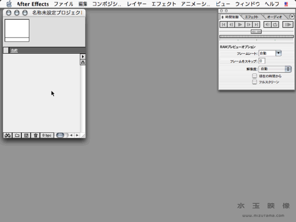
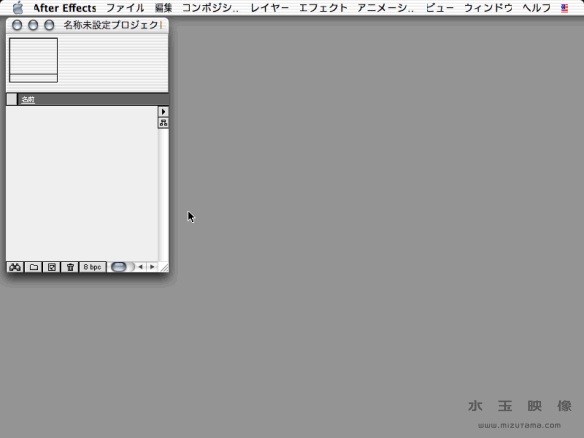
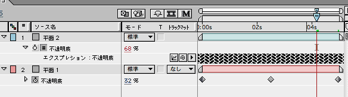
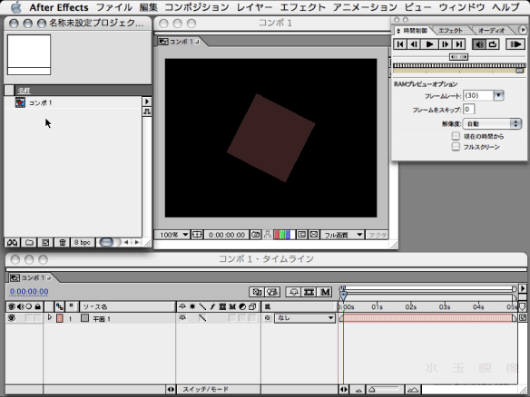

A.E. Tips : Expression studies
Basic
Expression（エクスプレッション）ってなに？ という人はまずここから。ここで入門第一歩を踏んでから、A.E.付属のマニュアル、Web上のチュートリアルで練習した方が、よりスムーズに理解を深めることができるでしょう。Basicとはいえ、ここだけでも十分に製作の助けになるはずです。
1.不透明度と回転の関連づけ
まずは触ってみましょう。メニューのどこにあるんだっけ？から始めます。
（注）以下の操作画面は一覧性を高めるために、モニタ表示を800*600モードで製作しました。そのため、メニューバーの表示が若干崩れています。

- A.E.を起動して、メニューに「アニメーション／エクスプレッションを追加」があることを確認。まだ設定できないので、ハーフトーンになっています。
- 新規コンポジションを「プリセット：中」（320*240、正方形ピクセル、30fps、5sec）で設定します。
- 新規平面で100*100の「平面１」を作る。
- レイヤー名の左の三角形をクリックして、「トランスフォーム／回転」を選択。
- 「回転」の文字が白黒反転したままの状態で、メニューの「アニメーション／エクスプレッションを追加」を選択。
- 「エクスプレッション：回転」の項目が現れ、タイムライン上が選択状態になり、「rotation」という文字が書き込まれていることを確認。回転の値が赤文字になっていることも確認。
- ぐるぐるマークのピックウィップを「不透明度」の文字の上にドラッグすると、文字の周りに枠線が現れたら、手を離す。
- 「rotation」と書き込まれていた部分が「opacity」に置き換わり、回転の値が赤文字で100になっていることを確認。
- キーボード上の「enter」キーを押して、「opacity」を確定させる。
- コンポジションウィンドウの平面が100度回転したことも確認。
- 不透明度の値を変えると、コンポジションウィンドウの平面が透明度を変えながら、回転する様子を確認。
- キーフレームを設定して、ムービー上でエクスプレッションが扱えることを確認。
2.フッテージ間で関連づけ
フッテージ間で動きを同期させることができます。
（注）キーボードが英数モードの時、フッテージを選択して「p」キーを押すと、ポジションの欄、「r」キーを押すと、回転の欄が出ます。詳しくは、A.E.付属のマニュアル、ヘルプ、クイックリファレンスカードを御覧下さい。

- 新規コンポジションを「プリセット：中」で設定します。
- 新規平面で100*100の「平面１」を作る。
- 新規平面で100*100の「平面２」を作る。
- 「平面１」の位置は「240,120」に、「平面２」の位置は「80,120」に設定。
- 「平面１」の「トランスフォーム／回転」を表示。
- 「平面２」の「トランスフォーム／回転」にメニューの「アニメーション／エクスプレッションを追加」を適用。
- 出てきたピックウィップを平面１の「トランスフォーム／回転」の文字の上にドラッグして適用。
- 6.で作成したエクスプレッションフィールドに「this_comp.layer("平面 1").rotation」が書き込まれたことを確認。
- 「平面１」の「トランスフォーム／回転」の値を変えると、同期して「平面２」が変化することを確認。
- 8.で確認した「this_comp.layer("平面 1").rotation」をクリックすると、フィールドが選択され、文字の入力が可能になります。この頭に英数モードでマイナス符号（-）をつけて、「-this_comp.layer("平面 1").rotation」にして下さい。
- 「平面１」の「トランスフォーム／回転」の値を変えると、同期して「平面２」が逆回転することを確認。
- 10.で設定した、フィールドの頭に英数モードで「30」をつけて、「30-this_comp.layer("平面 1").rotation」にして下さい。
- 「平面１」の「トランスフォーム／回転」の値を変えると、同期して「平面２」が30度ずれて逆回転することを確認。
- さらに、後ろに「*3」をつけて「30-this_comp.layer("平面 1").rotation*3」にして下さい。
- 「平面１」の「トランスフォーム／回転」の値を変えると、同期して「平面２」が30度ずれて３倍の逆回転することを確認。
3.練習問題
二つのフッテージの不透明度を関連づけて、「平面１を透明にすると、平面２が不透明になる。平面１を不透明にすると平面２が透明になる。」といった、互い違いに現れたり消えたりするエクスプレッションを作って下さい。 答えは、次の画像にマウスを重ねると表示されます。 4.コンポジションのループ
コンポジションをループさせます。 - 「1.不透明度と回転の関連づけ」の続きでループの設定をします。
- コンポ１を配置したコンポ２を作ります。
- 継続時間を15秒に設定します。
- タイムライン上でコンポ１を選択した状態で、「レイヤー／タイムリマップ使用可能」を適用。
- タイムライン上にできた「タイムリマップ」を選択した状態で、「アニメーション／エクスプレッションを追加」を適用。
- 「平面２」の「トランスフォーム／回転」にメニューの「アニメーション／エクスプレッションを追加」を適用。
- エクスプレッションメニューの中の「Property/loop_out(type = "cycle", num_keyframes = 0)」を適用。
- エクスプレッションフィールドに「loop_out(type = "cycle", num_keyframes = 0)」が書き込まれたことを確認。
- 0:00から5:00までのタイムリマップの設定が繰り返されていることを確認。